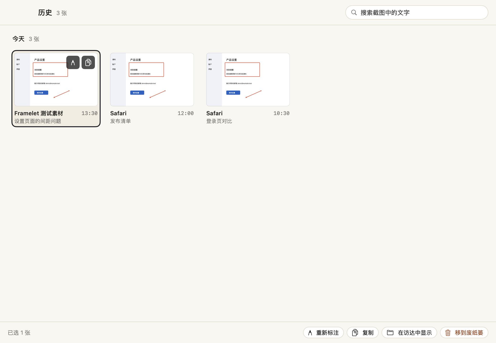
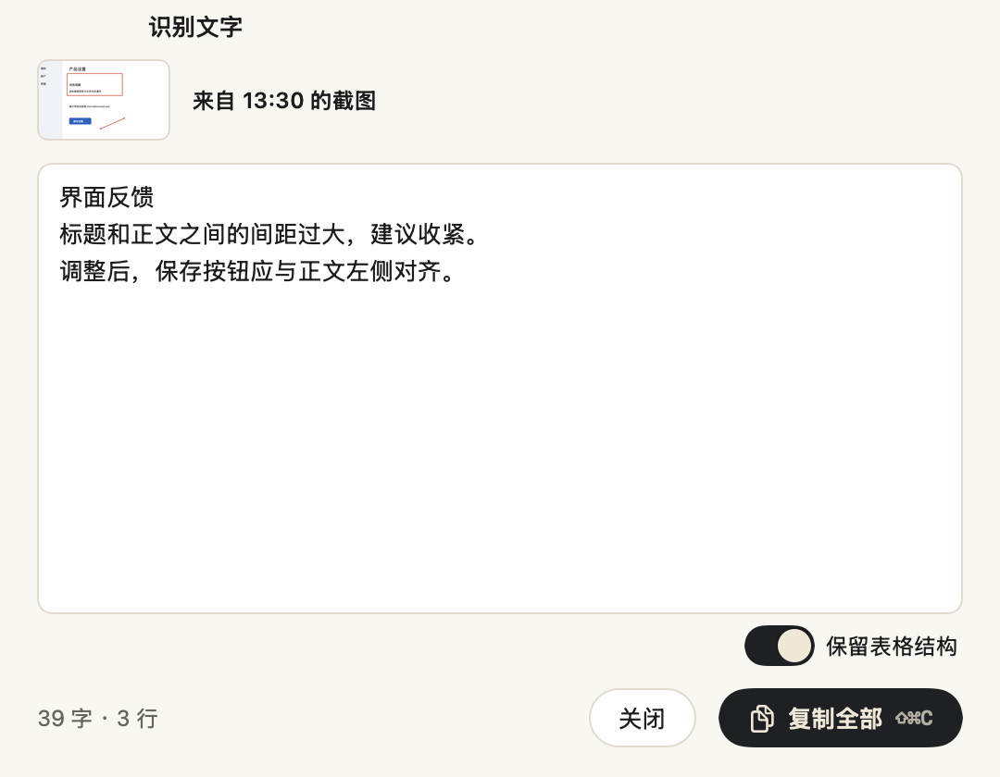

原位标注
17 个工具：选择、箭头、矩形、文字、画笔、编号、遮挡、裁剪常驻工具条，圆形、直线、高亮、马赛克、模糊、聚光、放大镜、测距、取色在「更多」里。数字 1–9 按顺序选择，默认信号橙，三档粗细按截图倍率换算。
⌃⇧4 区域截图。Framelet 冻结屏幕，你看到的就是会截下的。
放大镜显示像素坐标和色值，旁边实时显示尺寸。松开鼠标即确认，方向键可以微调；按空格改为截取窗口。
工具条出现在选区旁边。箭头 A、矩形 R、文字 T、编号 N、遮挡 X，每个工具一个字母。
按 ↩ 或 ⌘C 复制带标注的图片，⌘S 保存，Esc 退出。
17 个工具：选择、箭头、矩形、文字、画笔、编号、遮挡、裁剪常驻工具条，圆形、直线、高亮、马赛克、模糊、聚光、放大镜、测距、取色在「更多」里。数字 1–9 按顺序选择，默认信号橙，三档粗细按截图倍率换算。
⌃⇧O 框选一块区域，文字和二维码内容直接进剪贴板。标注时也可以打开识别面板，改好文字再复制。用 macOS 的 Vision 在本机识别。
把截图按 1:1 钉在原来的位置作参考。滚轮缩放，⌥ + 滚轮调透明度，可以开启鼠标穿透，双击关闭。
截图可以先停在屏幕左下角（最多 5 张），直接拖进其他应用。⌃⇧H 打开历史：按天分组，可以搜索标题和图中的文字。
遮挡在复制和保存时烧入图片，放大镜也采样不到原文。美化背景一步加上背景色、留白、圆角和阴影。
按前台应用设置截图后动作、格式、倍率、保存位置和标注颜色。framelet://capture 链接可以接入「快捷指令」，见 URL 自动化。
另有两项实验性功能：滚动长截图和录屏（可导出 MP4 / GIF），入口在菜单栏的「更多截图方式」，设置在 设置 › 实验性。


都可以在 设置 › 快捷键 中修改，改完立即生效。全局快捷键不需要输入监控或辅助功能权限。